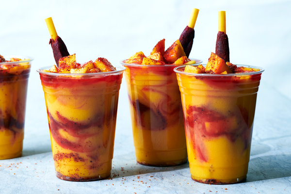

Mangonada

When the summer sun screams across Mexico's city streets and
sandy beaches, mangonadas come to the rescue. Also called chamangos, they can be
made with any combination of mango sorbet, chopped fresh mango or mango puree.
They may or may not be spiked, but they'll always contain the salty,
spicy and tangy glavors of Tajin and chamoy. Tajin, a chile-lime salt,
is a delicious addition to sweet and savory foods alike. Its sister condiment,
chamoy, is traditionally made from fermented fruit, salt, sugar and chiles.
Depending on your location, you can find Tajin, chamoy and tamaring straws -
their sour, chewy coating adds an extra tickle of tartness - at supermarkets
or Latin American grocers; all three are available online.
Ingredients
- 5 large ripe mangoes
- ~15 oz. each
- Peeled and pitted
- Cut into 1/2" pieces
- makes roughly 8 cups
- 1/4 cup granulated sugar, or to taste
- 1/4 cup fresh lime juice
- 1 1/2 cups cold water, or as needed
- 3/4 cup silver tequila or rum
- 3/4 to 1 cup chamoy
- Tajin, to taste
- 4 tamarind candy straws
Preparation:
- Blending:
- Place 5 cups mango in a blender
- Reserve the remaining mango.
- Add sugar, lime juice and 3/4 cup cold water to blender.
- Blend on medium-high speed until pureed.
- Blend in tequila or rum, if using
- Blend in additional water
- Add 1/4 cup at a time until mango mixture reaches
desired consistency.
Storage:
- Chill mango mixture, covered, in refrigerator until ready
to serve.
- For a colder mixture, transfer mixture to the freezer untiil
it reaches the consistency of a slushy.
Serving:
- Pour or scoop 1/2 cup of mango mixture into glass.
- Add 1/3 cup reserved mango.
- Add 1 to 2 Tbsp. chamoy and a generous sprinkle of Tajin.
- Repeat until cup is full.
- Garnish with tamarind candy straw, if using, and a spoon.
- Serve immediately.
Back to Home
Previous course!